Java's selection and iteration statements are called flow-of-control statements because they provide a highly structured method of conditionally and repeatedly executing a particular section of code.
In years past, however, before the control structures we use
today, programmers still needed the equivalent of if
statements and loops.
Rather than relying on built-in language
features, though, those iron-age programmers constructed their
own flow of control statements, using the jump.
The jump statement often uses another name; even programmers who
have never heard of the jump have heard of its nom de plum,
the goto statement. The computer scientist
Esdgar Dijkstra, (shown here), is best known for his landmark
paper published in the journal, Communications of the ACM,
titled GOTO Considered Harmful. The paper, which pointed
out the dangers of using the goto statement, and
urged its retirement, ignited a storm of controversy and
is often credited with starting the structured programming
revolution.
The goto is
one of Java's fifty reserved words, but it isn't actually
implemented as part of the language, (like it is in C++ and C#).
If your dream is to arbitrarily jump willy-nilly hither-and-yon
through your code, you'll have to find another programming
language to accomodate you. When it comes to loop control,
however, Java hasn't abandoned the jump altogether. Java has two
statements—break and continue—that
let you do your jumping in a controlled fashion.
The break Statement
The break statement is used in two different
circumstances, but both circumstances are quite similar.
The break statement allows you to jump out of:
- a
switchstatement - a loop
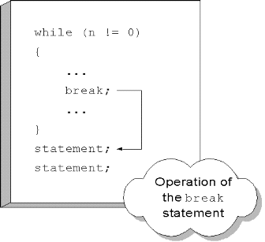
When abreak statement is encountered in the
body of a loop, your program jumps to the statement immediatly
following the loop body, as you can see in the illustration
shown here.
Any remaining statements within the loop body are skipped. The test expression is not re-evaluated; the termination occurs regardless of the value of the test expression.
Although it can be missused, allowing you to write
code that is as convoluted as any produced by the
goto statement, the break can
sometimes be used to make your loops simpler and clearer,
especially when used to create a loop-and-a-half.
Many textbooks discourage the use of the break
statement as part of a loop, but I disagree. Research has shown
that students who use the break statement following
the loop-and-a-half pattern shown below, understand the termination
condition better and consistently write correct loops more often.
Loop-and-a-half
As you know, the built-in loops test either before the loop body, or after the loop body. Sometimes, however, its much more convenient to test inside the loop body. This is especially true when a primed loop requires many lines of code just to set up the loop condition.
This can be done by using a Boolean flag, like we did in the last lesson. There are pros and cons to this approach.
- Con: using a flag introduces another variable, which adds to the "mental overhead" of understanding the function.
- Pro: the flag can be used to consolidate several different, otherwise unrelated, bounds conditions, making the overal loop structure clearer.
I, personally, feel that flag-controlled loops only
make sense in this second situation: where you have several
different bound conditions and you can use nested or
sequential if statements to intialize a
single Boolean flag.
The PositiveMean2 Example
Let's look at an example of a loop that uses the
break statement to implement a loop-and-a-half.
PositiveMean2.java is a rewrite of the
PositiveMean example from the lesson on while
loops.
Instead of using a primed loop that reads
a number before the loop, and then reads the next number
at the bottom of the loop, this version of the application
uses a single read statatement, along with a
break statement to exit the loop:
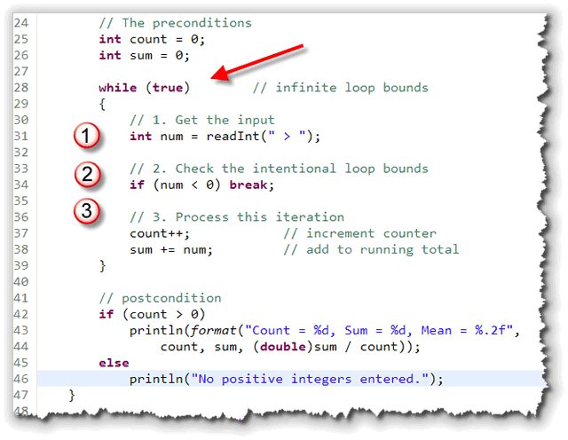
Note that thewhile loop uses a bounds condition
of true; that means that this is an
infinite loop that can only exit using the
if statement in it's center.
Often, in a loop-and-a-half, you'll put the necessary
bound here, to make sure a loop doesn't run past the end of
an input String, for instance.
Inside the loop you'll find:
- An "input" section in the top half of the loop. Of course, you'll recall that this is exactly the same structure that was used for the flag-controlled sentinel loop in the last lesson.
- The loop condition
doesn't need to test for the sentinel value, because it's
tested in the middle of the loop body, using
and
ifstatement. When the sentinel is encountered, the loop is exited using thebreakstatement. This is the loop's intentional bounds. - After the "test in the middle", the actual
processing takes place. Unlike a flag-controlled loop,
this code does not need to be placed inside an
else block, since thebreakstatement causes a jump past this code when it it is encountered.
You can
run the program, by clicking the hyperlink
in this sentence. To download the source code and run it on
your own computer, click the link at the beginning of this
section. Here's what the program looks like when it runs on
my machine:
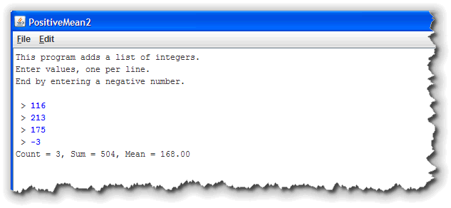
The continue Statement
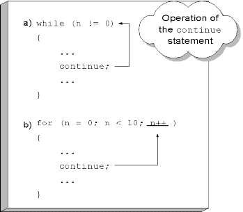
Thecontinue statement is a jump statement like
break, but unlike break,
the continue jumps back to the loop
condition, rather than jumping out of the loop.
Exactly what that means depends upon which loop you're using:
- For the
whileloop and thedo-whileloop, thecontinuestatement jumps to thebooleantest, skipping backward (while) or forward (do-while) as necessary. - With the
forloop, control jumps to the update expression.
An Example : Summing Digits Yet Again
Let's look at an example from JavaBat where you might want to
use the continue statement with a for
loop. We've already seen two programs that sum the digits in
an integer. How about summing the digits in a String?
Well, that's easy. To turn a String containing digits
into an integer, you can use the Integer.parseInt()
method. You can walk through the String with a
for loop, extracting each single-character
digit substring. Use Integer.parseInt() on the substring,
and add that to the running total.
- all of the characters inside the
Stringmay not be digits. If a character isn't a digit, then you'll want to skip it. - our plan depends on extracting single-character substrings,
but the
Character.isDigit()method, which we need to use to determine if an individual character is a digit, takes acharparameter, not aString.
Neither of these are huge problems, but they mean that the
code is a little bit more complex than the original plan
would suggest. The continue statement can make
the solution a little simpler. The
sumDigits problem is from the String-3
section. Here's the summary:
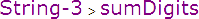
Given a String, return the sum of the digits 0-9 that appear in the String, ignoring all other characters. Return 0 if there are no digits in the string. (Note: Character.isDigit(char) tests if a char is one of the chars '0', '1', .. '9'. You can convert a digit to an integer by subtracting '0' or by converting to a String and using the Integer.parseInt() function.)
Here are some examples:
- sumDigits("aa1bc2d3") returns 6
- sumDigits("aa11b33") returns 8
- sumDigits("Chocolate") returns 0
The Solution
The first step in solving this problem is to put in the
"boiler-plate" code; that is, the code you really don't
need to think about. Here's what that looks like:
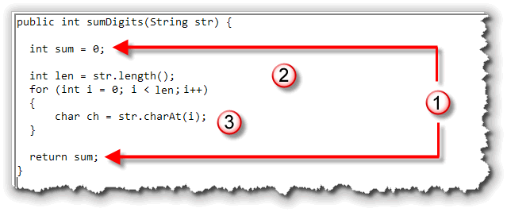
Notice that:- As with any function, our first step is to
create and initialize a variable to hold the returned
value (
sumin this case), and then add areturnstatement at the end of the function. - Since we need a loop, the next step is to determine
the loop bounds. As with most
Stringfunctions, you'll use the length as a count bounds. Since we are going to visit every character, we don't need to subtract anything from the length, like we would if we were comparing substrings of different lengths. - Finally, we need to add the "reading" or data input
part. We know that we'll need to process each character,
so we can use the
charAt()function like this.
Using continue
Now that we have a character, we have two choices. If it is a digit, we want to convert it to an integer and add it to a sum. If it is anything else, we want to just ignore it and go get the next character.
This is where the continue statement comes into
play. Use the Character.isDigit() method to check
if the character is a digit. If it is not, the
continue statement sends you right back up
to the loop update expression, like this:
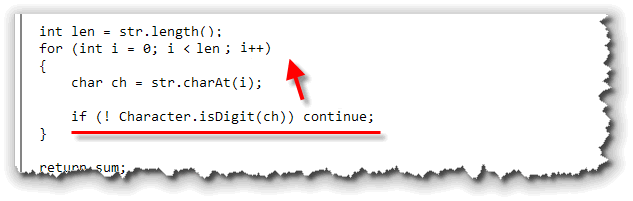
Converting the Digit with parseInt()
At this point, we know that the character is a digit, and so we want to convert it to an integer, and add that integer to the sum. (Don't just add the character to the sum. The numeric Unicode value of the digit '1' is 49, and that is what would be added. You won't get the answer that you expect.)
To convert your digit to an integer, you can useInteger.parseInt() like this:
sum += Integer.parseInt("" + ch);
Note you have to use String concatenation
because Integer.parseInt() only accepts
String parameters.
Using Character Arithmetic
Another alternative is to take advantage of the fact that
all of the digit characters are contiguous, located
right next to each other in the Unicode (or any other
character set.) Since char varaibles are actually
16-bit numbers, you can use them in arithmetic expressions,
including subtraction.
Now, suppose ch contains the digit character
zero. If you subtract the char literal
'0' from ch you'll get the
integer value 0. The same thing works for the
other digit characters, since they are right next to
each other in the character set.
Thus, instead of using concatenation and
Integer.parseInt(), you can just do the
conversion and the addition like this:
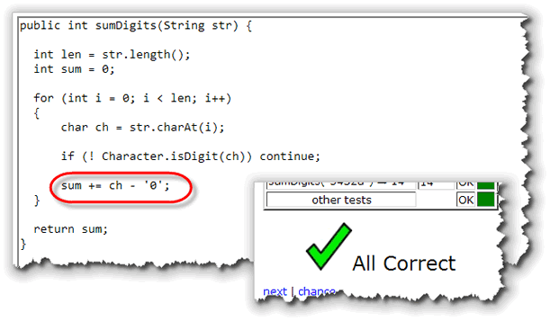
Labeled break and continue
One of the problems with nested loops, is that the
break and continue statements stop
"working." Actually, they don't stop working, exactly; they just
don't work quite the way you'd like. Here's the problem.
Both break and continue work on
the current loop. That means, when you are in an inner
loop, a break statement only exits the inner loop,
it doesn't get you out of the outer loop. Java has a facility
to address this deficiency, called the labeled break and
the labeled continue. Here's how they work:
- Before each loop, add a label. A label is simply an identifier that ends in a colon.
- Inside the loop, use the name of the label, along
with the keyword
breakorcontinue, to jump to the loop following the label.
Here's an example:
// Labeled break and continue
int count = 0;
Outer: // label ends with a colon
for (int outer = 1; outer < 1000; outer++)
{
for(int inner = 1; inner < 1000; inner++)
{
count++;
if ( inner % 2 == 0) continue;
if ( inner % 201 == 0 ) break;
if ( outer % 25 == 0 ) continue Outer;
if ( outer % 51 == 0 ) break Outer;
}
}
Can you follow the flow of control in this nested loop? Let's analyze it:
- The outer loop goes from 1 to 999, and for every revolution
of the outer loop, the inner loop should also go around 999
times. If there were no
breaksorcontinues, then the loop would repeat 998,001 times. - In the inner loop, every even value where (
inner % 2 == 0) usescontinueto skip back to the update expression of the inner loop. However, wheninnerreaches 201 (an odd number)breakends the inner loop. The inner loop, then, never executes more than 201 times per revolution of the outer loop. - On the 25th repetition of the outer loop, there is a
labeled
continue. The target of thiscontinueis the labelOuter. This causes a jump to the expressionouter++, (after updating count) and the 25th and 50th iterations of the inner loop are skipped. - Finally, on the 51st repetition of the outer loop, the
labeled
breakis encountered. This jumps to the statement following the closing brace of the loop labeled byOuter.
The result? The variable count records 201
iterations of the inner loop times 48 iterations of the outer
loop, plus 3 entries to the inner loop with early exit (two
continue Outer and one
break Outer). The final total for
count is 9,648 instead of 998,001.
Data-Bound Loops
Up to now we've written counter-controlled, sentinel-controlled and limit-controlled loops. There is one last category of loop you'll need to know how to implement: the data-bound loop.
With a data-bound loop, instead of looking for a specific value, like we do with a sentinel, or a computed value, like we do with limit loops, we just keep going until there is no more data left.
Well, how do we tell if there is any more data left? For that, we rely on the operating system to send us a specific signal, traditionally called EOF. EOF stands for "end of file"; an EOF-controlled loop is just another name for a data-bound loop.
Introducing Iterators
 To implement a data-bound loop, you'll usually use an
iterator of some sort. An iterator is an object
that allows you to apply some operation to all of the members
of a group of related variables or objects, using a loop.
To implement a data-bound loop, you'll usually use an
iterator of some sort. An iterator is an object
that allows you to apply some operation to all of the members
of a group of related variables or objects, using a loop.
Iterators can be used to skip from cell to cell in a biological simulation, or to display an "overhead radar" of all of the objects in a game of Doom (as the illustration on the right shows.) As one textbook put it: "iterators provide a consistent and simple mechanism for systematically processing a group of items", no matter what kind of things those items might be.
Such groups of related items or variables are known as
collections, and Java has several different
types. The String class is a a collection of
characters, and, in another sense, it is a collection of
tokens. Tokens are just meaningful sequences of
characters.
In the next unit we'll take a look at Java's array collection types, and later in the semester we'll look at the ArrayList class. If you go on in Computer Science and take CS 272 or CS 200 (Data Structures), you'll learn about dozens if different kinds of collections and their associated iterators.
In this lesson, though, let's take another look
at an iterator object you've already met: the
java.util.Scanner class.
The Scanner Class
You first met the Scanner class back in Unit 2,
where you saw how it could be used to read input in
a "traditional" Java console program. Most of the programs
we've written since then, though, have used the ACM
ConsoleProgram class, which has its own
method of reading input.
The Scanner class is actually much more versatile
than I've let on. Using a Scanner as an
iterator allows us to:
- process each individual word in a line of text
- read and process each line of text in a file
- read and process tokens from a network stream
In the first lesson of this unit (Logical Operators) you
saw how you could use the logical AND and NOT
operators to count the number of words in a String.
In that lesson, you had to carefully monitor each character
to see if you were entering or leaving a word, and then act
accordingly.
The iterators provided by the Scanner class
will do all of that for you automatically.
Reading Tokens
To read a token using the Scanner class,
you have to do three things:
- Construct a
Scannerobject and "hook it up" with the source of the data. - Write a
whileloop that continues until you are out of data. You do that by calling theScanner hasNext()method. If you are at end-of-input (or EOF), then the method will returnfalse; otherwise it returnstrue. - Read the next word or token from the
input. You do that by calling the method
next()which returns a token, not a line of text.
The next() method returns its token as a
String with all of the delimiters
(or token-separators) removed. The "stock" version
of the Scanner uses whitespace as the delimiter,
so the token you get back will have both leading and
trailing whitespace removed.
Creating Scanner Objects
Here are a few snippets that show you how to connect a
Scanner object with diffferent kinds of
data sources. You already saw how to connect to the
standard Java system console (System.in) like this:
Scanner cin = new Scanner(System.in);
To read from an ACM ConsoleProgram using a
Scanner, you first need to "grab" the underlying
"reader" object like this:
Scanner cin = new Scanner(getReader());
To "read" from a String token-by-token,
either of these will work:
Scanner sin1 = new Scanner("A string literal.");
Scanner sin2 = new Scanner(str); // a String variable
To read from a file on disk, you first need to open the file. Java has a wealth of classes that allow you to do this, but, unfortunately, all of them require you to explicitly handle various error conditions, such a missing file.
You'll learn how to use Java's standard file-processing classes
in the second half of the course. For right now, though, we
can fall back on the ACM MediaTools class, which
has an OpenDataFile() function that performs the
error-handling for you.
Here's how you'd use the class to open the text file "moby.txt" containing the text of Moby Dick:
Scanner fin = new Scanner(MediaTools.openDataFile("moby.txt"));
The FileStats Example
To see how an iterator works, let's build a
program that asks the user for the name of the file to open,
and then uses the Scanner class to loop through
the file and count them the words, lines and characters.
We'll call the program FileStats. Click the link in the previous sentence to download and run the program on your own machine. You'll also need to get one or more text files (or download moby.txt) and place them in the same folder as FileStats.java.
Here's what the program looks like as it runs:
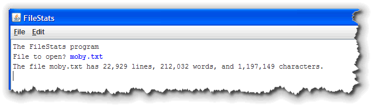
Here's how it worksGetting Started
Our program needs to use the Scanner class, which is
located in the java.util package and the
MediaTools class which is part of the
acm.util package, which we'll need to open
the file.
Step 1 is to import those two packages,
like this:
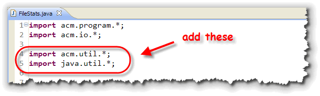
Opening the File
Here's the code from the program that opens the file:
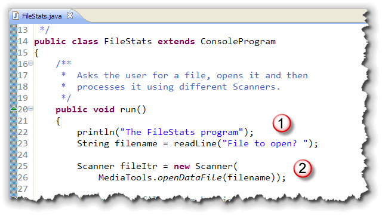
The program:- Asks the user for the name of the file to open
and stores it in the
Stringvariable namedfilename - It then creates a
Scannerto iterate over the file. To construct theScannerobject, it first calls theMediaTools.openDataFile()method.
Reading the File
We'll use this iterator (fileItr) to
process the data file a line at a time. Here's the code that
does that
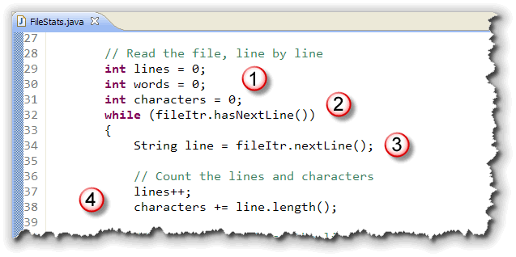
Here's how it works:- Before we start reading the file, we need to create and initialize counter variables to hold the words, characters and sentences that we encounter.
- Because this is a data-bound loop, we'll
keep going as long as there are more lines in the file.
Do that by using the iterator's
hasMoreLines()method. - Inside the loop, we actually read the
line by using the iterator's
nextLine()method and storing the result in aStringvariable. - Once we've read a line of text we can update our word and character counters.
One thing you should note
is that nextLine() does not save the
newline characters at the end of each line of text, so
the number of characters we'll report will not include those.
Counting Words
To count the words in the file, we'll create a second
Scanner object, and use it to iterate over the
line of text that we retrieved from the file. Here's what
that code looks like:
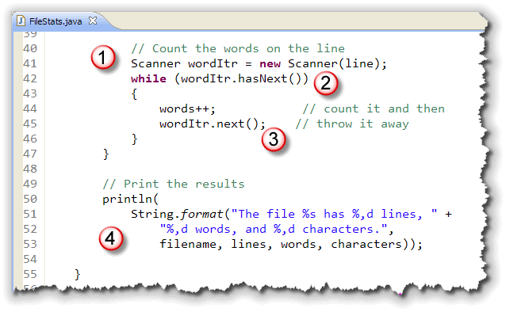
Here's how it works:- The new
Scannerobject,wordItr, is constructed by passing the line of text read from the file. Notice that this iterator will be iterating over aString. That's the beauty of iterators: it doesn't matter what you're looping over, the methods are the same. - Because we want to read token-by-token, we use
another data-bound
whileloop, using thehas.next()(instead ofhasNextLine()) iterator method. - Inside the loop, we read the next token (using
the
next()method. We aren't going to further examine it, so we don't bother saving it in a variable; instead, we just count the word. - Finally, after the loop, we have a regular formatted print statement displaying the statistics on our file.
When Things Go Wrong
What happens if you type in a name for a file and your
program can't find the file you've requested. At first,
it may look like your program just hangs up, but that's
not the case. The error message is printed on the regular
Java console window, not on your ACM application's console.
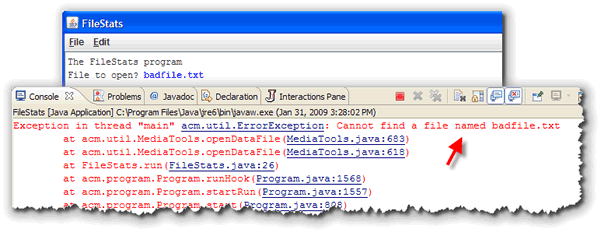
You can anticipate this problem by first checking to see
if the file you want to open actually exists. You can do
that by using the File class and it's
exists() function, along with a return
statement like this:
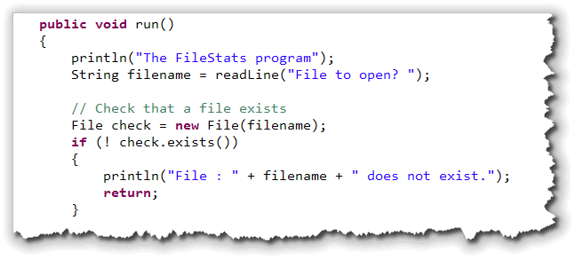
To use theFile class, you have to import the
java.util package.
If the file isn't found, I simply exit the program
by using a plain return statment. Since the
run() procedure is not a function it
doesn't need a return statement. If
you want to leave a procedure early, though, you can always
use a plain return with no expression following it.
More on Tokens
Once each line has been extracted, the FileStats program uses a
second Scanner designed to break each line into its
individual parts, (called tokens). A token is just a "meaningful
chunk of text". Words are tokens, as are the operators, operands, and keywords
in a programming language like Java.
To define a token, you specify the characters that separate one token from
another. These are called delimiters. As I mentioned, the
default delimiters are the whitespace characters. If you want to
read your text based on a different set of tokens, though, you
can use the Scanner useDelimiter() method to change
the separator to something else.
Coming Up ...
In this lesson, you learned how to use Java's jump statements,
the break and continue. You also learned how
to use the labeled versions of these two jumps to exit an outer
loop from inside an inner loop. Finally, you learned how to use the
Scanner class to process the items in a String
and to read the lines from a file.
That's it for this unit. Make sure you finish taking the Unit 5 quiz and head on over to the Exercises page for the assignments this week.